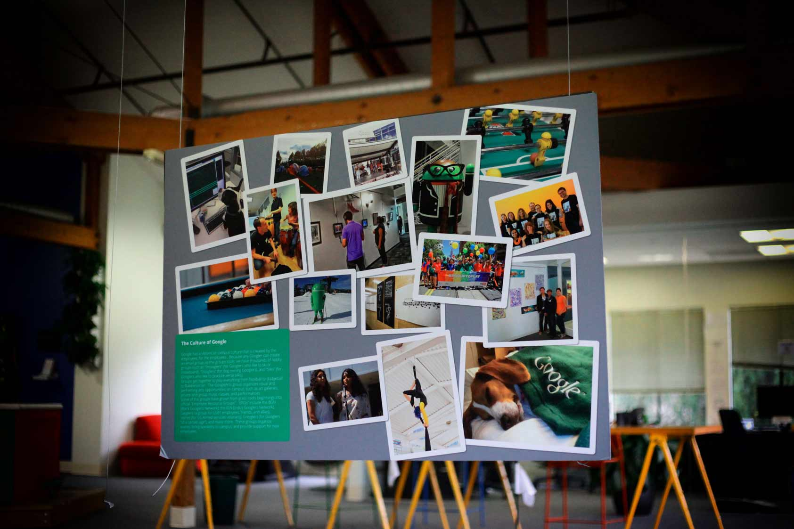
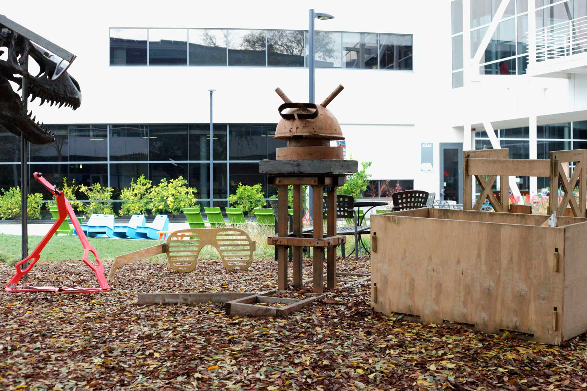

얼마 전, 인간계 바둑 최강자라 불리는 이세돌 9단이 구글(Google) 알파고와의 대국에서 큰 참패를 보았다. 이 사건은 국내외로 크게 이슈가 되었고 결국은 인간이 테크놀로지에 잠식되어버리고 말 거라는 비관론이 확산되기도 했다. 이러한 엄청난 테크놀로지의 질주의 중심에 서 있는 구글은, 현재 인공지능 뿐만 아니라 모바일 소프트웨어부터 가상현실, 무인자동차 분야까지 IT 산업의 지평을 넓혀나가고 있다. 공간 431팀은 구글에서 소프트웨어 엔지니어로 일하고 계신 이한승 선배님(서강대 컴공 졸)을 만나 구글의 혁신에 관한 놀라운 이야기와, 구글의 소프트웨어 엔지니어로서의 삶에 대한 깊이 있는 생각을 들어보았다.
안녕하세요! 저희는 서강대 Art&Technology학과 재학생들로 이루어진 공간 431 팀입니다. 선배님께서 구글에서 어떤 일을 하고 계시는지 궁금합니다.
반갑습니다. 저는 지금 구글의 유튜브에서 video classification 관련해서 알고리즘을 짜는 일을 하고 있어요. 다양한 classification이 있는데 예를 들자면, 유튜브 영상이 그 콘텐츠에 따라서 권장 관람 연령이 있겠죠? 영상이 아이들 용인지, 아니면 성인용인지 머신 러닝(machine learning)을 이용해서 자동으로 구분해주는 알고리즘을 만들고 있어요. 이 뿐만 아니라 영상이 스포츠/농구 분야인지 혹은 스포츠/축구 인지 등 가능한 카테고리에 몇 퍼센트 정도에 근접한지 판단하는 알고리즘도 만들고요. 저희 팀의 결과물을 활용해서 할 수 있는 것들이 많아요. 그 중 하나가 유튜브 키즈 앱이죠. 성인용 비디오를 걸러내서 아이들이 편하게 볼 수 있는 영상만 모아둔 앱이에요. 또, 이렇게 video classification을 통해서 각 영상의 주 시청자들에게 효과가 클 수 있는 광고를 결정하기도 하고요.
자동으로 그런 분류를 하는 거군요! 혹시 잠깐 언급하신 머신 러닝에 대해서 자세히 설명해주실 수 있으신가요.
구글에서 진행하고 있는 프로젝트의 반 이상이 다 머신 러닝을 활용하고 있다고 보아도 되요. 머신 러닝이란 예를 들면 이런거죠. 여기 컵이 하나 있어요. 그리고, 여기 다른 형태의 컵들이 있고요. 이런 컵에 관한 정보를 컴퓨터에 입력시켜요. 이런 정보들을 컴퓨터가 프로세싱을 하고, 나중에는 완전히 새로운 모양의 컵을 보아도 그것이 컵이라는 걸 컴퓨터가 스스로 인식할 수 있게 하는 것. 이런 식이에요. 최근 머신 러닝 붐이 크게 일고 있죠. 직접 일을 해보면 수학, 통계와 큰 연관이 있다는 걸 알 수 있을 거에요. 또, 많은 데이터를 빠른 속도로 처리해야하기 때문에 C++ 언어를 주로 사용해요.
그런 첨단 테크놀로지를 구현하기 위해선 다양한 역량이 필요할 것 같아요. 선배님 생각에 구글은 어떤 엔지니어를 채용하려 한다고 생각하시나요?
음… 우선 구글이 소프트웨어 엔지니어를 채용할 때, 지원자가 프로그래밍 언어와 관련해서 장벽이 없다고 가정을 하는 것 같아요. 한편으로는 한 언어를 전문적으로 다룰 줄 알면 다른 언어는 쉽게 배울 수 있거든요. 구조가 비슷하니까요. 제 생각에 자신의 메인 랭귀지가 하나 있고, 더불어 다른 언어에 대해서는 불편함이 없는 정도가 되는 인재를 뽑으려 하는 것 같아요. 또, 제가 생각했을 때 구글이 뽑으려고 하는 사람은 원론적인 부분에 대해서 깊게 파고들어본 사람인 것 같아요. 백엔드 엔지니어라면 단순히 코딩을 잘 하는 것을 넘어 알고리즘이라는 것에 대한 이해도가 높은 사람을 원하는 것 같아요. 알고리즘을 알고, 또 알고리즘을 디자인할 수 있는 사람이요. UX엔지니어를 뽑을 때 구글에서 질문하는 것 중 하나가 자바스크립트에서 프로토타입이라는 것이 무엇인지래요. 한국에서는 우선 결과를 만들어낼 수 있는 인재를 원하지만, 여기는 단순히 결과를 도출해내는 코드가 아닌, 버그가 없고, 다른 사람이 읽을 수 있고, 또 간단한 완벽한 코드를 만들 줄 아는 사람인 것 같아요.
우와. 역시 구글답게 완벽한 사람을 원하는 군요. 선배님 역시 굉장한 실력자이신데, 어떻게 프로그래밍을 공부하신 건가요?
저 같은 경우는 프로그래밍 대회를 준비하는 동아리를 하나 만들었어요. 함께 알고리즘을 공부하고, 다 같이 프로그래밍 대회에 출전하기도 하죠. 처음 이걸 공부할 땐 멍 때리는 시간이 많았어요. 하지만 계속 꾸준히 하다보면 확실히 실력이 오르더라고요. 저 역시도 학교 다닐 때 주변에 잘하는 사람들을 보면서 조금 주눅들 때가 있었어요. 지금도 물론 구글에서 그런 고민을 하고요. 하지만, 그건 누구라도 마찬가지 일 것 같아요. acmicpc라고 프로그래밍 대회가 있는데, 인터넷에 관련 자료가 많아요. 공부해보시면 실력이 쑥쑥 느실 거에요. 공부를 열심히 하긴 했어요. 하지만 대회 준비를 같이 하니, 1등을 하긴 힘들었죠 하하.
구글이 IT분야에서 다양한 모험을 하고 있는데, 어떤 재미있는 프로젝트들을 준비하고 있는지 궁금합니다.
음. 최근에 하고 있는 것은 카메라가 달린 브로치 같은 거에요. 브로치를 옷에 걸면, 하루종일 내 일상과 관련한 사진이 찍혀요. 그리고, 구글의 알고리즘을 통해서 의미있는 사진들을 뽑아내는 거죠. 나중에 ‘오늘 내가 뭐했지?’ 같은 의문이 들 때, 사진들을 살펴볼 수 있는 거죠. 아까 여기 오시면서 보셨듯이 무인 자동차도 개발하고 있고요. 최근에 구글에서 알파벳이라는 자회사를 만들어서 실험적인 프로젝트들을 관리하고 있어요.
신기하기도 하지만 한편으로는 새로운 프로젝트와 관련해서 도덕적인 문제들이 발생할 것 같은데요, 이러한 문제를 구글에서는 어떻게 다루고 있나요?
제가 생각했을 때, 회사 차원에서는 도덕적인 문제가 아닌 법적인 문제를 신경 쓰고 있는 것 같아요. 어쩔 수 없이 기업은 수익을 바라보는 회사니까요. 구글에는 직원이 12,000 명 정도 있는데 그 중에서 약 천 명 정도가 변호사에요. 아까 말씀 드린 머신 러닝을 예를 들어보면, 과연 머신 러닝을 통해 컴퓨터가 어떠한 결정을 내렸는데, 그 결정이 법적으로 문제가 생겼다면. 누구한테 그 책임을 물을 수 있을까요? 결국에 사회적으로 많은 토론과 합의가 필요한 문제이죠. 하지만 한편으로는 결국 이런 도덕적인 문제를 안고 있는 서비스들은 출시가 될 거에요. 구글의 입장은 ‘우리는 제품/서비스를 내놓을 테니 당신들이 이걸 판단하세요’인거죠. 예전에 한참 개인 GPS와 관련해서 인권 침해 논쟁이 있었지만, 결국 지금 보세요. 모든 사람들이 휴대폰으로 GPS를 갖고 있잖아요.
빠른 기술의 변화가 두려워지네요. 그렇다면, 구글에서 일하는 것의 장점은 무엇이라고 생각하시는지 궁금합니다.
구글은 식당이 유명한데요, 사실 한 달 정도만 있으면 지겨워지는 것 같고요. 하하. 저는 젠더 바이어스를 없애려고 하는 게 한국과 비교해서 상당한 장점이라고 생각해요. 구글에서 발표한 통계자료가 있는데, 똑 같은 직급의 상사라도 직원들이 여자 상사에게는 남자 상사에게보다 질문을 적게 한대요. 직급이 같다는 건 능력치가 비슷하다는 건데, 여자 상사에게 덜 물어보는 게 조금 이상하지 않나요? 하여간 구글에서는 회사 내 성차별을 막기 위해서 이렇게 관련 조사도 하고, 노력을 많이 하는 것 같아요.
와. 정말 구글은 다양한 면에서 혁신적인 회사인 것 같아요. 앞으로의 모습이 더욱 기대가 되는 기업이네요. 저희를 위해서 이렇게 시간 내주시고 좋은 이야기 들려주셔서 정말 감사드려요!
아니에요. 저도 만나서 반가웠습니다!